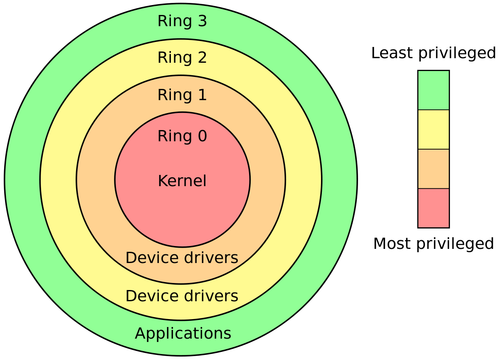

🧬 Архитектура системы
Что такое Linux
Linux — это модульная, гибко масштабируемая система, в основе которой лежит философия: делай одну вещь, но хорошо.
Архитектура построена на взаимодействии ядра, пользовательского пространства и вспомогательных компонентов, отвечающих за управление, безопасность и автоматизацию.
🛡️ Уровни привилегий CPU

Linux, как и другие ОС, работает с уровнями привилегий процессора — CPU ring levels.
Уровни привилегий в Linux
В Linux существуют следующие уровни:
- Ring 0 (Kernel Mode): Максимальный уровень привилегий. Здесь выполняется ядро Linux.
- Ring 1-2: Исторически для драйверов (в Linux не используется).
- Ring 3 (User Mode): Минимальные привилегии. Здесь работает большинство приложений и служб.
Примечание
Современные процессоры добавляют Ring -1 (для гипервизоров) и SGX-энклавы (Trusted Execution Environment).
Потенциально опасное место
Всегда следите за новыми версиями микрокода CPU и обновляйте его, так как существуют уязвимости типа Meltdown/Spectre, которые эксплуатируют различие между уровнями привилегий.
⚙️ Пространства Linux
Самый фундаментальный архитектурный принцип в Linux - это строгое разделение системы на два изолированных мира:
- Kernelspace: пространство ядра,
- Userspace: пространство пользователя.
Примечание
Данное разделение не произвольно, а основано на уровнях привилегий CPU.
Зачем нужно это разделение
Основная цель - защита.
Если бы любое приложение могло напрямую обращаться к оборудованию, ошибка в коде браузера или текстового редактора могла бы привести к краху всей системы.
Разделение гарантирует, что только одна, тщательно протестированная программа - ядро - имеет полный контроль.
🐧 Пространство ядра
Что такое Kernelspace
Kernelspace - это эксклюзивный клуб для ядра Linux.
Это защищенная область памяти, где код выполняется с максимальными привилегиями.
Задача Kernelspace быть единственным и эксклюзивным менеджером всех ресурсов системы.
Ключевые характеристики:
- Прямой доступ к оборудованию: Только ядро может напрямую общаться с процессором, памятью, дисками и сетевыми картами.
- Высокие привилегии: Код выполняется в Ring 0 процессора.
- Защищенная память: Ни один пользовательский процесс не может прочитать или записать данные в память ядра.
Что здесь находится:
- Планировщик процессов: Решает, какому процессу и когда выделить процессорное время.
- Менеджер памяти: Управляет виртуальной памятью, страницами и кэшем.
- Драйверы устройств: Модули, которые "знают", как работать с конкретным железом.
- Сетевой стек: Управляет протоколами TCP/IP, маршрутизацией и файрволом.
- Файловые системы: Реализуют логику
ext4,XFSи других ФС.
Рекомендация
Все манипуляции с ядром (настройка sysctl, загрузка модулей и т.п.) должны производиться с пониманием последствий.
Используйте staging-среду для теста изменений перед продакшеном.
🧑💻 Среда пользователя
Что такое Userspace
Userspace - это все, что не является ядром.
Здесь живут и работают все ваши программы, от командной оболочки до веб-сервера и графического процессора.
Задача Userspace предоставлять среду для выполнения пользовательских задач.
Ключевые характеристики:
- Ограниченные права: Код выполняется в Ring 3 процессора.
- Нет прямого доступа к оборудованию: Чтобы прочитать файл или отправить пакет по сети, программа должна попросить об этом ядро.
- Изоляция: Процессы изолированны друг от друга. Один процесс не может "залезть" в память другого.
Что здесь находится:
- Оболочки и CLI:
bash,zsh,fish. - Системные демоны:
systemd,sshd,nginx,docker. - Графические интерфейсы:
GNOME,KDE,Xorg,Wayland. - Библиотеки:
glibc,libssl,libc++- предоставляют удобные функции-обертки. - Все пользовательски приложения.
↔️ Системные вызовы
Что такое системные вызовы
Когда приложение в Userspace нужно что-то от системы, оно не может сделать это само. Оно должно вежливо попросить ядро.
Происходит данный процесс через единственный строго контролируемый мост - системные вызовы.
Процесс взаимодействия выглядит так:
- Запрос: Приложение, например
ls, хочет прочитать содержимое каталога. Оно вызвает функциюreaddir()из стандартной библиотекиglibc. - Trap (Ловушка):
glibcподготавливает параметры и выполняет специальную инструкциюsyscall. Процесс немедленно останавливает выполнение приложения, сохраняет его состояние и передает управление ядру. Это переход из Ring 3 в Ring 0 и вызываетсяtrap. - Выполнение в ядре: Ядро проверяет запрос, находит нужный драйвер файловой системы, читает данные с диска.
- Возврат: Ядро копирует результат (список файлов) в память, доступную приложению, и возвращает управление обратно в Userspace.
- Результат: Функция
readdir()в приложенииlsзавершается и возвращает полученные данные.
Предупреждение
Каждый системные вызов - это относительно дорогая операция, так как требует переключения контекста между Ring 3 и Ring 0.
Эффективность системных вызовов - важный аспект производительности любой программы.
🧩 Компоненты системы
Теперь, когда мы разделили систему на два "мира", надо разобрать ключевые компоненты, которые в них живут.
Чтобы понять их взаимодействие, мы рассмотрим их не как простой список, а как слои, выстроенные друг на друге - от самого низкоуровневого фундамента до окружения, с которым работает пользователь.
+----------------+
| Пользователь |
+----------------+
|
+------------------------|-------------------------+
| Shell / GUI / CLI / Приложения (Userspace) |
+------------------------|-------------------------+
| (D-Bus, сокеты, API)
+-------------+-------------+
| |
+----------v----------+ +----------v----------+
| systemd (PID 1) |---->| D-Bus Брокер |
| - Менеджер юнитов | +---------------------+
| - Сессии / cgroups | ^
+----------+----------+ |
| | (Авторизация, IPC)
| |
+----------v--------------------------------------------+
| | | | | |
| logind| udevd | journald | Polkit | PAM |
+-------+---------------+-----------+-------------+-----+
|
+----------v---------------------------------------------------+
| Ядро Linux |
| - Syscalls, драйверы, namespaces, cgroups |
| - Netfilter, eBPF, XDP, BPF maps |
| - Планировщик, память, файловые системы |
| - Storage stack: LVM, dm-crypt, Btrfs, RAID |
+--------------------------------------------------------------+
Примечание
Компоненты системы можно условно разделить на следующие уровни:
- Базовый уровень — ядро Linux и инициализация (
systemd), обеспечивающие запуск, планирование и взаимодействие процессов. - Контроль доступа и безопасность —
PAM,Polkit,Logind, а также механизмы изоляции и политики (SELinux,AppArmor,seccomp, capabilities). - Инфраструктура взаимодействия —
D-Bus,Udev,Auditd, формирующие системную шину и реагирование на события. - Ресурсный и изоляционный уровень —
cgroups,namespaces, подсистемы контейнеризации (runc,crun,systemd-nspawn). - Наблюдаемость и аудит —
journald,auditd,/proc,perf,bpftrace,systemd-analyze, обеспечивающие метрики, логи и трассировки. - Сетевой и storage-уровень —
Netfilter,iproute2,LVM,Btrfs,ZFS,udev, реализующие хранение, маршрутизацию и безопасность. - Механизмы расширения ядра —
eBPF,XDP,kprobes, позволяющие динамически внедрять логику в ядро без модулей. - Пользовательская среда — оболочка (shell), окружение рабочего стола, библиотеки, инструменты CLI и GUI.
🧠 Ядро (Kernel)
Что такое ядро Linux
Ядро — это центральный компонент системы, который действует как посредник между аппаратным обеспечением и программами пользователя.
Оно напрямую управляет ресурсами системы, определяет приоритеты процессов, обеспечивает безопасность и стабильность работы.
Основные задачи ядра:
- Управление процессами: Планирование, синхронизация, создание (
fork), завершение (exit). - Управление памятью: Виртуальная память, отображение страниц, выделение/освобождение памяти.
- Работа с оборудованием: Через абстракцию драйверов — управление сетевыми интерфейсами, дисками,
USB,PCI. - Сетевая подсистема: Протоколы уровня ядра (
TCP/IP), фаерволы (Netfilter), туннелирование (WireGuard). - Файловая система: Абстракция доступа к данным, монтирование и синхронизация, поддержка множества форматов (
ext4,XFS,Btrfs). - Безопасность: Механизмы контроля доступа (
SELinux,AppArmor,seccomp), контроль над системными вызовами,audit.
Совет
Обратите свое внимание на eBPF (extended Berkeley Packet Filter).
Это технология, позволяющая безопасно выполнять пользовательские программы внутри "песочницы" в ядре Linux.
В отличие от модулей, eBPF-программы проходят строгую проверку (Verifier), что гарантирует их безопасность и предотвращает крах системы.
Это превращает ядро из статичного в динамически программируемое, меняя подходы к сетям, безопасности и мониторингу.
Подробнее про eBPF см. в главе 👉 eBPF.
Подробнее про устройство ядра см. в главе 👉 Ядро.
🚀 Systemd
Что такое systemd
Если ядро - это правительство, то systemd - это его исполнительная власть в мире пользовательского пространства.
На современных Linux-системах почти все компоненты, которые мы рассмотрим, либо запускаются, либо управляются, либо тесно интегрируются с systemd.
Поэтому правильнее рассматривать архитектура через призму его роли как центрального менеджера системы и сервисов.
Прежде чем говорить о других компонентах, нужно понять, что systemd - это не просто init-система.
Это целая платформа, выполняющая три ключевые роли:
- Система-инициализации (PID 1): Это фундаментальная роль
systemd.systemd- первый процесс, запускаемый ядром, который отвечаеет за запуск всех остальных сервисов. - Менеджер сервисов и зависимостей: Он не просто запускает процессы, а управляет их жизненным циклом, ресурсами (через
cgroups) и сложными зависимостями(After=,Wants=,Requires=). - Набор интегрированных служб:
systemdпредоставляет собственные реализации для управления ключевыми подсистемами. Многие компоненты, которые раньше были отдельными, теперь являются частьюsystemd:systemd-logind,systemd-udevdи другие.
Примечание
В любой системе только один процесс может иметь PID 1 — он несёт ответственность за запуск остальных и за усыновление осиротевших процессов.
Подробнее про systemd и системы инициализации см. в главе 👉 Система инициализации.
⚙️ Udev
Что такое udev
udev — это подсистема управления устройствами, отвечающая за обнаружение, именование и настройку оборудования в реальном времени.
Имеет свою реализацию в systemd - systemd-udevd.
Когда в систему подключается новое устройство (например, USB-накопитель), udevd выполняет следующую работу:
- Получает событие от ядра (
uevent). - Сопоставляет его с правилами из
/etc/udev/rules.d/. - Создает соответствующий файл в
/dev/и может автоматически запускать действия (например, монтирование, передача вsystemd).
Функции, которые выполняет udev:
- Динамическое создание/удаление device nodes.
- Назначение персистентных имен устройствам (
/dev/disk/by-id/...). - Интеграция с
systemdи триггеринг сервисов (SYSTEMD_WANTS). - Автоматизация — запуск скриптов при подключении устройств.
Подробнее про udev и управление устройствами см. в главе 👉 Устройства и udev.
🚌 D-Bus (Desktop Bus)
Что такое D-Bus
D-Bus — это IPC (межпроцессное взаимодействие), упрощающее коммуникацию между демонами и пользовательскими программами.
Есть две разновидности:
- System bus: глобальный, для системных сервисов (root-демонов).
- Session bus: локальный, для пользовательских приложений в сессии.
Сценарии, в которых участвует D-Bus:
- Пользователь нажал кнопку "выключить" в GUI → сигнал в
logindчерезD-Bus. - Служба
NetworkManagerсообщает приложению о смене IP-адреса. Polkitзапрашивает подтверждение действия от пользователя через агент в сессии.
Пример взаимодействия через D-Bus
Эта команда программно инициирует перезагрузку компьютера, вызывая метод Reboot у системной службы systemd-logind через шину сообщений D-Bus.
Подробнее про D-Bus и межпроцессное взаимодействие см. в главе 👉 D-Bus.
🔐 Механизмы доступа
Примечание
В многопользовательской системе Linux важнейшим элементом архитектуры являются компоненты, контролирующие доступ — как на уровне входа в систему, так и при выполнении чувствительных операций.
🛂 PAM
Что такое PAM
PAM или Pluggable Authentication Modules - это модульная система аутентификации, используемая для управления входом пользователей, sudo, ssh и другими службами.
Особенности:
- Конфигурация через
/etc/pam.d/(по службам). - Поддержка двухфакторной аутентификации, LDAP, Kerberos.
- Возможность настройки сложных политик входа, блокировки, таймаутов.
Подробнее про PAM см. в главе 👉 Pluggable Authentication Modules.
🚪 Logind
Что такое logind
logind — это компонент, управляющий сессиями пользователей.
Имеет свою реализацию в systemd - systemd-logind.
Функции, которые выполняет logind:
- Создание и уничтожение пользовательских сессий.
- Управление мультисессионностью (например, удаленные сеансы по SSH).
- Передача сигнала об отключении экрана, блокировке сеанса.
- Управление привилегиями для временного доступа к устройствам (
seat,inputи др.).
Примечание
Через logind пользователь может заблокировать экран, завершить сеанс, или получить временный доступ к устройствам.
Подробнее про logind см. в главе 👉 Logind.
🛡️ Polkit (PolicyKit)
Что такое Polkit
Polkit — это механизм контроля за выполнением привилегированных действий от имени обычного пользователя.
Типовой сценарий: Пользователь хочет перезапустить nginx из GUI → D-Bus → Polkit → запрос пароля → действие разрешено.
Компоненты Polkit:
- polkitd — демон.
- Agent — GUI-агент, отображающий запросы.
- Rules — можно писать на JavaScript (
.rulesв/etc/polkit-1/rules.d/).
Подробнее про Polkit см. в главе 👉 Polkit.
🧾 Auditd
Что такое auditd
Auditd — это подсистема аудита безопасности ядра Linux.
Функции, выполняемые auditd:
- Отслеживание системных вызовов (
open,execve,chmod, и др.). - Логирование попыток доступа к защищенным файлам.
- Интеграция с
SELinuxи другими механизмами контроля доступа. - Конфигурация через
/etc/audit/audit.rules.
Подробнее про auditd и безопасность системы см. в главе 👉 Безопасность и аудит.
📚 Оболочка
Что такое оболочка и библиотеки
🐚 Оболочки (bash, zsh, fish) — это интерфейс командной строки, через который пользователь взаимодействует с системой.
Они предоставляют удобства вроде автодополнения, скриптов, алиасов и интеграции с инструментами (fzf, tmux, docker).
📦 Библиотеки — это абстракции над системными вызовами, используемые как приложениями, так и системными демонами.
Примеры библиотек:
glibc— реализация стандартной библиотеки C:malloc,printf,open.libssl— криптография (TLS/SSL).libsystemd— взаимодействие сsystemdчерез API.musl— минималистичная альтернативаglibc, часто используется в Alpine Linux.
Пример прямого системного вызова в Go
Хотя стандартная библиотека Go (os, fmt) абстрагирует системные вызовы, можно использовать пакет syscall для прямого взаимодействия с ядром.
package main
import (
"syscall"
)
func main() {
// Сообщение для вывода
message := []byte("Hello from direct syscall!\n")
// Прямой системный вызов write()
// 1 - файловый дескриптор для stdout
syscall.Write(1, message)
// ↘ Переход из Ring 3 → Ring 0 через системный вызов write()
// ↘ Ядро Linux обрабатывает и выводит данные в терминал
}
В этом примере вы напрямую вызываете write() — переход в Ring 0, выполнение операции в ядре, и возврат результата.
🏛️ Ключевые подсистемы
Примечание
Если в предыдущем разделе мы рассмотрели отдельные компоненты — конкретные программы и демоны, отвечающие за запуск и управление, — то здесь мы рассмотрим подсистемы.
Подсистема — это не одна программа, а целая функциональная область (например, всё, что связано с сетью или хранением данных), которая сама состоит из множества компонентов ядра и userspace, стандартов и протоколов, работающих вместе для решения одной большой задачи.
🗄️ Уровень хранения
Что включает storage-уровень
Архитектура уровня хранения (Storage Layer) — это многоуровневая абстракция, объединяющая устройства, тома, файловые системы и монтирование.
Ключевые технологии:
- ФС:
ext4,XFS,Btrfs,ZFS. Подробнее см. в главе 👉 Файловая система. - LVM — логические тома и snapshot'ы. Подробнее см. в главе 👉 LVM.
- RAID — отказоустойчивость и балансировка. Подробнее см. в главе 👉 RAID.
dm-crypt, LUKS — шифрование блочных устройств. Подробнее см. в главе 👉 Шифрование.
Примечание
udev также является частью уровня хранения.
🌐 Сетевой стек
Что включает сетевая подсистема ядра
Linux предоставляет гибкую и расширяемую сетевую архитектуру.
Ключевые компоненты:
Netfilter/nftables— встроенный фаервол.iproute2(ipиtc) — маршрутизация, shaping.- Virtual Ethernet (
veth) — интерфейсы между namespace'ами. - Bridges и VLAN — L2-коммутация.
- VXLAN, GRE, WireGuard — туннелирование.
- BPF/XDP — высокопроизводительная фильтрация трафика.
Пример: сетевой namespace
Создаёт виртуальный интерфейс и перемещает его в отдельный сетевой namespace.
📦 Изоляция
Как Linux изолирует ресурсы
Namespaces — это механизм изоляции ресурсов в Linux. Они позволяют запускать процессы, которые видят только "свой" ограниченный мир.
Типы пространств имён:
pid— изоляция процессов.net— изоляция сетевого стека.mnt— отдельные точки монтирования.uts— собственное имя хоста.ipc— изоляция межпроцессного взаимодействия.user— собственный набор UID/GID.cgroup— управление ресурсами.
Control Groups (cgroups) — это механизм ограничения, учета и изоляции ресурсов процессов (CPU, память, IO и т.п.).
systemd использует cgroups для управления сервисами, ограничивая и отслеживая ресурсы через slice, scope, unit.
Примечание
Контейнеризация в Linux реализована не за счёт отдельной технологии, а комбинацией namespaces и cgroups.
Взаимодействие с ними происходит через рантаймы (runc, crun), которые создают ограниченное окружение, изолированное от остальной системы.